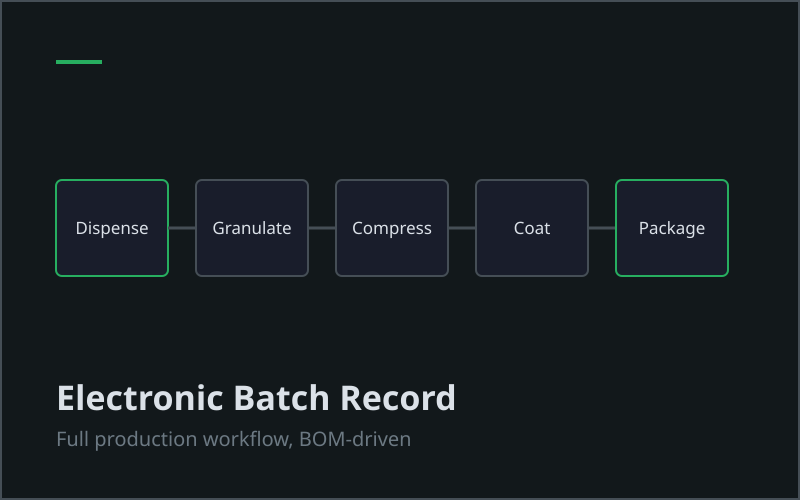
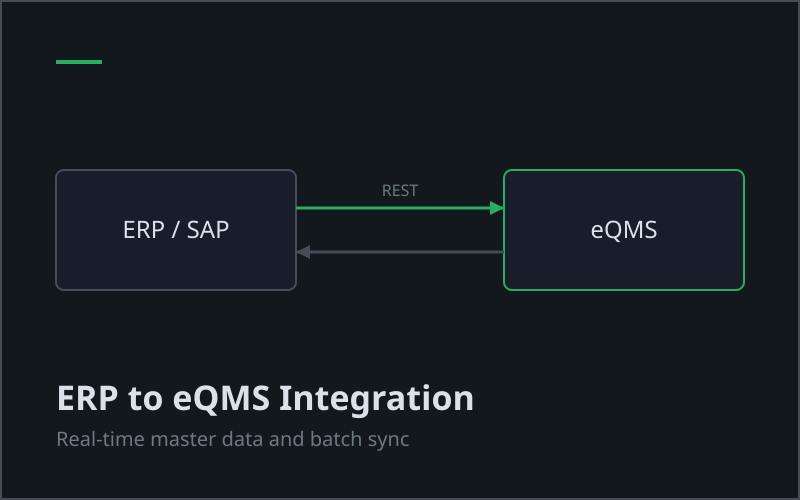
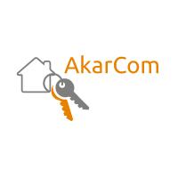
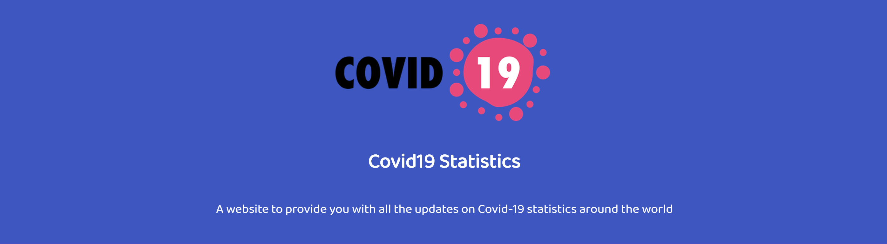
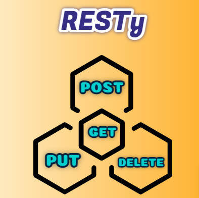
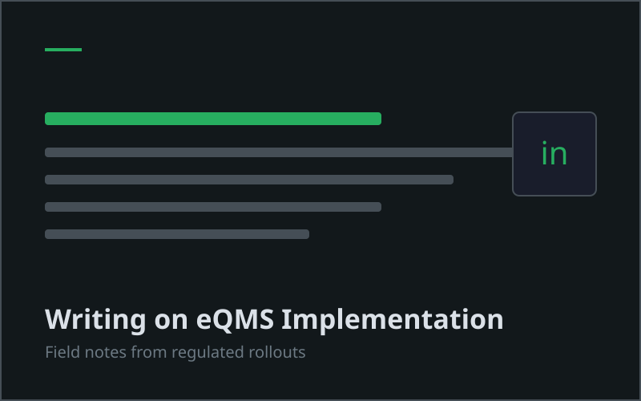

About memy work
I'm based in Amman, Jordan, and I work as a Technical Product Specialist at
Scigeniq, a life sciences SaaS company building Quality Management Systems for
pharmaceutical and food manufacturers.
My day-to-day sits between the client and the product: gathering quality and
production requirements, translating them into system configuration, designing
modules and workflows, building integrations against our platform API, running
demos and admin training, and feeding product gaps back to engineering. I've
done this across more than twenty live customers.
I started as a full-stack JavaScript developer, which is still the part I lean
on most — I write the reports, scripts, and migrations myself rather than
handing them over. I work in GxP, GMP, 21 CFR Part 11, EU Annex 11 and CSV
contexts, in both Arabic and English.
20+
Live QMS
clients
20+
Platform
modules
3+
Years in
life sciences
PMP
Certified
2026
What I work with
Experience
2024/Aug - present
Technical Product Specialist @ Scigeniq
Implementation and configuration of the eQMS platform across 20+ live pharmaceutical and food manufacturing clients. Requirements gathering, module and workflow design, API integrations, custom reporting, data migration, training, and post go-live support.
2023/Jul - 2024/Aug
Software Engineer, Full Stack @ Scigeniq
Feature development across the QMS product suite, including SSO with Azure AD and Passport.js for the document, records, and PWA applications. Client-facing QMS work from the first month.
2023/Feb - 2023/Jul
Teaching Assistant, Coding Program @ ASAC - LTUC
Supported the JavaScript web development course: code review, debugging sessions, and one-to-one support for trainees.
ASAC on LinkedIn2022/Mar - 2022/Oct
Software Development in JavaScript @ ASAC - LTUC
Six-month intensive bootcamp in full-stack JavaScript development.
2019 - 2021
Site Engineer - Al Faisal Contracting Co.
Civil engineering site supervision. Where I learned to work to a specification and document what was actually built.
2026
Project Management Professional - PMI
PMP certified, passed on the first attempt. B.Sc. Civil Engineering, Yarmouk University (2014 - 2019).
My WorkMy Work
Modules and integrations I've designed and built inside the eQMS platform. Client names and systems are omitted; happy to walk through any of these in detail.

APQR & Statistical Analysis
Annual Product Quality Review built as an EJS reporting engine that pulls QA processing, QC results, and in-process data out of the system and renders the full review, including Cpk and Ppk calculations and trend charts per product.

Electronic Batch Record
A complete production workflow per product: process order receiving, raw material dispensing, granulation, compression, line clearance, cleaning and safety checks, tabletting, solution preparation, and packaging — all bound to the bill of materials and product specifications.

ERP to eQMS Integration
Real-time integration between client ERP systems and the QMS over our REST API — materials, products, suppliers, batches, and QC numbers. Endpoint design and testing, field mapping, integration users, and the technical documentation the ERP team builds against.

Assets, Calibration & Risk
Asset management with calibration and preventive maintenance scheduling, plus a risk register module. Designed alongside the Chief Quality Officer and product team, then configured and rolled out to clients.



My WritingWriting

Notes on eQMS implementation
I write on LinkedIn about what implementing quality systems in regulated manufacturing actually looks like — requirements that change after go-live, validation, and running system rollouts in GxP environments.
Contact MeContact
Get in touch
Amman, Jordan
mhmd.shrydh1996@gmail.com
B.Sc. Civil Engineering, Yarmouk University
PMP, Project Management Institute
Arabic, English